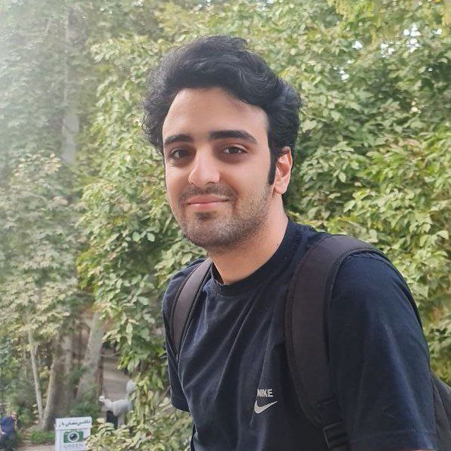

Mehrdad Aksari MahabadiI graduated from Amirkabir University of Technology with a degree in computer science.
I am interested in a variety of topics, including distributed database systems, algorithms, and theoretical computer science.
I enjoy implementing systems from scratch and optimizing them.
|
 |
Jan 2025
I'm back trying new ideas to improve estimated time of arrivals (ETA).
Jan 2024 Dec 2024
I worked on robustness of deep learning models at the Machine Learning Laboratory, Sharif University of Technology under the supervision of Dr. Mahdieh Soleymani.
Jan 2023 Mar 2024
I worked as a software engineer at Snapp.
Snapp is the leading company in providing online taxi services with over 30 million users in Iran. As part of the Routing team, we were responsible for providing estimated time of arrival (ETA) and navigation services.
- Integrated traffic speeds into routing algorithms, enabling time-dependent routing.
- Redesigned ETA benchmarking service leveraging concurrency, increasing throughput by x10.
- Maintenance and development of the team's API gateway with up to 7K/RPS workload. Key contributions include implementation of canary deployment, and hot reload of configurations.
Sep 2020 Jan 2025
BSc at the Amirkabir University of Technology (Tehran Polytechnic) majoring in computer science.
I ranked in the top three students on multiple occasions due to cumulative GPA. I graded 18.79 / 20.
teaching
I was fortunate to be a teaching assistant for the following courses :
- Deep Learning (graduate course), Spring 2025, Sharif University of Technology
- Computational Geometry, Fall 2024, Amirkabir University of Technology
- Numerical Linear Algebra, Fall 2024, Amirkabir University of Technology
projects
bustub
is an educational relational database management system built at CMU. I implemented all the assignments of the project
including thread-safe implementation of buffer pool manager, B+tree index, and query execution layer. The code is not publicly available due to course policies.
camel
is an interpreted programming language written in go. It supports arrays, dictionaries, functions, and closures.
xv6
is a fork of MIT's xv6 operating system that implements copy-on-write and lazy page allocation.
evolucopter
is an evolutionary agent that masters a simplistic helicopter game using genetic algorithms and neural network.
jnotes
is my playground that contains deep neural network architecures, such as VAE, GAN, DDPM, RNN, LSTM and GPT, all implemented from scratch in pytorch.
jclash
is a clone of the game Clash Royale in Java. This was the final project of Advanced Programming course at Amirkabir University of Technology
and my first real experience with programming.
coyote
is a project that visualizes and compares Dijkstra, A*, and ATL algorithms to compute the shortest path on a road network.
I implemented this for fun when I began working at Snapp. The end goal was to understand shortest path algorithms in more depth.
visual cryptography
is a perfectly secure cryptographic scheme, which can decode concealed images without any cryptographic computations.
I implemented this technique as an exercise in go programming language.
misc unsorted
- I have a brother. We are non-identical twins
- In my free time, I go running, hiking, or climbing.
- This website design was inspired by Andrej Karpathy.